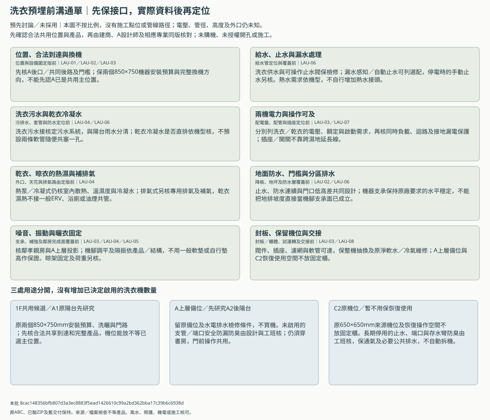

長期使用與設備規劃
2026-11-13｜預先討論基準，未整套採用。B最新局部與C照護續版尚未全部併入整棟；合法可建量、產品及專業核對待資料。A裝潢另談，預埋前共同合圖。
最新洗衣方向：三棟1F共用一組、C2F先暫不用但保原機位與空間，A2F以上另預留機位。依洗曬平面、前側瓶頸／條件式後口及日常／雨天輪用討論；原圖內機位保持，未選A為共享主位置。
先把方案、要問的資料與最後核對工序備好；實際日期、型號、容量、金額及選擇留白。這些議題原已有登錄，本包將它們接到工序與回覆方式。
洗衣預埋前：三處用途與八項接口
先與建商及A設計師保住一樓共用候選、A上層備位和C2恢復使用的空間與可檢修接口。乾衣先研究熱泵／冷凝式，排氣式保條件比較；實際主位置、完整產品與機電圖到齊後再定點位及施工，不先買機、鑽孔或把一般新風當乾衣排濕。
先核主位置與合法到達，再核同型號與完成牆柱；850×750備位不是實際產品安裝核可，A後門到乾衣備位20mm模型餘量仍需重核。此圖不按比例，沒有施工點位或管線路徑。

| 位置／用途 | 先保留 |
|---|---|
| 1F共用候選／A1原陽台先研究 | 原兩個850×750mm安裝預算、洗曬與門路；先核合法共享到達和完整產品，機位能放不等已選主位置。 |
| A上層備位／先研究A2後陽台 | 留原備位及水電排水檢修條件，不買機。未啟用的支管／端口安全防漏防臭由設計與工班核；仍須穿書房，門前操作共用。 |
| C2原機位／暫不用保恢復使用 | 原650×650mm來源機位及恢復操作空間不放固定櫃。長期停用的止水、端口與存水彎防臭由工班核，保通氣及必要公共排水，不自動拆機。 |
| 預埋接口 | 最晚核對工序 | 現在先保留 | 實際資料後核對 | 沿原問題／A接口 |
|---|---|---|---|---|
| 位置、合法到達與換機 | 位置與設備圖定版前 | 先核A後口／共同後路及門檻；保兩個850×750機器安裝預算與完整換機方向，不能先認A已是共用主位置。 | 正式總平面、合法開口、牆柱／完成面、產品門片及換機包絡；A前側810假設瓶頸與後門行程20mm餘量須同版回核。 | BC-06／BC-16／A-IF-01／A-IF-10 |
| 給水、止水與漏水處理 | 給水管定位與覆蓋前 | 洗衣供水與可操作止水閥保檢修；漏水感知／自動止水可列選配，停電時的手動止水另核。熱水需求依機型，不自行增加熱水接頭。 | 供水壓力、原廠接管需求、閥件操作範圍、接頭不被機身封死及壓力／漏水檢查紀錄。 | BC-14／A-IF-03／A-IF-10 |
| 洗衣污水與乾衣冷凝水 | 污排水、套管與防水定位前 | 洗衣污水接核定污水系統，與陽台雨水分清；乾衣冷凝水是否直排依機型核，不預設兩條軟管隨便共塞一孔。 | 管徑、坡度、接管高度、存水彎／通氣／掃除與防回流的同版圖，合法終端及運轉排水試驗；數值由設計與原廠定。 | BC-14／A-IF-03／A-IF-10 |
| 兩機電力與操作可及 | 配電盤、配管與插座定位前 | 分別列洗衣／乾衣的電壓、額定與啟動需求，再核同時負載、迴路及接地漏電保護；插座／開關不靠跨濕地延長線。 | 同型號供電需求、盤表與配線保護、可及且避濺的點位及測試方法；不預填110／220V、安培、線徑或插座高度。 | BC-15／A-IF-05／A-IF-10 |
| 乾衣、晾衣的熱濕與補排氣 | 外口、天花與排氣路由定版前 | 熱泵／冷凝式仍核室內散熱、溫濕度與冷凝水；排氣式另核專用排氣及補氣，乾衣濕熱不接一般ERV、浴廁或油煙共管。 | 原廠通風／間距、合法外口、防雨防蟲、進排氣相互影響、完整管長阻力及棉絮清理；沒有資料不先打洞或封天花。 | BC-12／BC-16／A-IF-04／A-IF-10 |
| 地面防水、門檻與分區排水 | 降板、地坪及防水層覆蓋前 | 止水、防水連續與門口低高差共同設計；機器支承保持原廠要求的水平穩定，不能把地排坡度直接當機腳支承面已成立。 | 完成標高、防水與穿管收口、合法地面排水及防倒灌剖面，排水／防水測試；平門檻目標不等已核無障礙。 | BC-14／BC-20／A-IF-03／A-IF-10 |
| 噪音、振動與曬衣固定 | 支承、補強及鄰房完成面覆蓋前 | 核鄰孝親房與A上層投影；機腳調平及隔振依產品／結構，不用一般軟墊或自行墊高作保證。晾架固定及荷重另核。 | 樓板支承、脫水工況、噪音振動目標／實測方法及使用時段；升降架承重、可及高度、衣物外廓與暗管避讓。 | BC-06／BC-20／A-IF-08／A-IF-10 |
| 封板、保留機位與交接 | 封板／櫃體、試運轉及交接前 | 閥件、插座、濾網與軟管可達，保整機抽換及原淨軟水／冷氣維修；A上層備位與C2恢復使用空間不放固定櫃。 | 隱蔽管線照片、實際圖號版次、試驗原始紀錄及保養責任；C2停用口防臭防漏措施由工班核，不封死通氣或公共排水。 | BC-17／BC-20／BC-22／A-IF-10／A-IF-11 |
| 乾衣方向，未選 | 預留條件 | 尚須依據 |
|---|---|---|
| 熱泵／冷凝式：先研究 | 平放備位、產品供電與散熱空間；冷凝水直排或集水盒依機型，仍核晾衣區排濕補氣。 | 不因免一般熱風排氣管就稱免通風，先核原廠環境限制、程序／床品與維修；未選機。 |
| 電力排氣式：保條件比較 | 平放備位、足夠供電、合法獨立排氣終端與補氣及棉絮清理路徑。 | 外口／管長阻力／防雨與補氣可行後再比較；本輪未規劃燃氣，未先開孔或將排氣接ERV。 |
電壓／容量、迴路、線徑、管徑、坡度、接管與插座高度、外口及風量均待產品與現場設計，不先開孔或封板。熱泵／冷凝式仍核散熱與環境；排氣式不接一般ERV、浴廁或油煙共管。未規劃燃氣，也未選型或核准施工。
原建商回覆表按BC問題列回覆，A設計師沿A介面表核分工，檢查沿工序檢查表與估價／變更表；責任、費用工期與保固仍待議定，沒有新增必填表。資料到齊後先在新比較版合圖，再由相應設計者核對並另發施工文件。
回看日常／雨天輪用。20欄實際條件全空，沒有代填已通過或自動採用。
SYS-01｜新風、熱濕與聲學
現在先準備：分已常用與未啟用區，對照關門送回／補氣、除濕、隔音與檢修；B香火獨立。
資料進來後：外殼／朝向、時程、負荷、工作點、噪音與濕度控制資料。
應先核對節點：天花及外口／管井鎖定前
沿用原登錄，不改狀態
- PLAN-COMFORT-01｜熱濕與外殼整體｜unknown
- PLAN-COMFORT-02｜聲音低頻與睡眠｜unknown
- PLAN-COMFORT-04｜健康材料、濕黴蟲害與耐久｜unknown
- PLAN-RITUAL-01｜祭祀用火與煙氣｜unknown
SYS-02｜熱水、排水與防漏
現在先準備：畫遠端用水及同時用水情境，列給排水、通氣、手動分區閥與循環有無的比較。
資料進來後：實際壓力／流量、管長、熱源容量、防燙、坡度／終端與保溫。
應先核對節點：降板、套管及水電預埋前
沿用原登錄，不改狀態
- PLAN-WATERPROOF-01｜防水剖面及收邊｜unknown
- PLAN-OUTAGE-03｜漏水火警與長期外出｜unknown
- PLAN-COMFORT-01｜熱濕與外殼整體｜unknown
SYS-03｜三棟獨立／共用分界
現在先準備：逐一列水、電、網路、計量、維修關閉及未來分戶；空氣系統已要求各棟獨立。
資料進來後：公用事業、地政與建築師意見、容量與合法跨界條件。
應先核對節點：進線、配電／給水及跨界管道定案前
沿用原登錄，不改狀態
- PLAN-SHARED-01｜三棟各自或共用｜unknown
- PLAN-SHARED-02｜跨基地設備隔離｜unknown
- PLAN-SHARED-03｜未來產權與隱私｜unknown
SYS-04｜停電、斷網及在地操作
現在先準備：列必要照明／門禁／供水／警報的手動降級與必要備援，不預定全部UPS。
資料進來後：安全負載、允許中斷、在地控制、離線測試及復歸程序。
應先核對節點：盤表、設備採購與控制配線前
沿用原登錄，不改狀態
- PLAN-OUTAGE-02｜停電停水斷網備援｜unknown
- PLAN-OUTAGE-03｜漏水火警與長期外出｜unknown
- PLAN-OUTAGE-04｜燃氣、一氧化碳與電氣故障｜unknown
SYS-05｜A／C長期上樓策略
現在先準備：只維持一樓生活、預留升降與完整安裝三種方向列面積／結構／費用／救援代價，不先選電梯。
資料進來後：家人使用策略、合法井道／坑底／頂部、負載、電力與消防。
應先核對節點：結構與樓板洞口鎖定前
沿用原登錄，不改狀態
- PLAN-ACCESSIBILITY-03｜升降策略與停電｜unknown
- PLAN-STRUCTURE-04｜全棟逃生、地震與防墜｜unknown
SYS-06｜屋頂、暴雨與防颱維修
現在先準備：設備／景觀荷重、錨定、防水與堵塞溢流、停電排水及安全到達維修一起列。
資料進來後：結構、標高坡度、排水終端、抗風固定與專業試驗計畫。
應先核對節點：結構、防水覆蓋及設備支架施工前
沿用原登錄，不改狀態
- PLAN-STRUCTURE-02｜屋頂設備及運動荷重｜unknown
- PLAN-WATERPROOF-02｜暴雨堵塞與溢流｜unknown
- PLAN-WATERPROOF-03｜颱風停電與外部維修｜unknown
SYS-07｜整機拆換與十年持有
現在先準備：按完整方案列買入／安裝／調試、濾材、保養、能耗與換機路線；未知留白不算總價。
資料進來後：同範圍有效報價、使用時程／電價假設、維修零件與保固。
應先核對節點：採購與天花／櫃體封閉前
沿用原登錄，不改狀態
- PLAN-OUTAGE-01｜設備整機拆換｜unknown
- PLAN-DELIVERY-01｜預算分期與同範圍估價｜unknown
- PLAN-DELIVERY-03｜交屋系統維護訓練｜unknown
本包依據 0683ac112efadbb43f909c246e5dcaf21b6f35722da1f6f1fa7adcf9db70c0b9。靜態閱讀副本，沒有新瀏覽器／3D或專業驗收；來源與使用邊界。